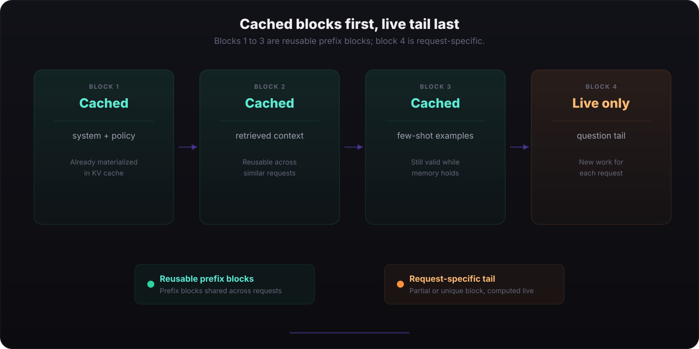
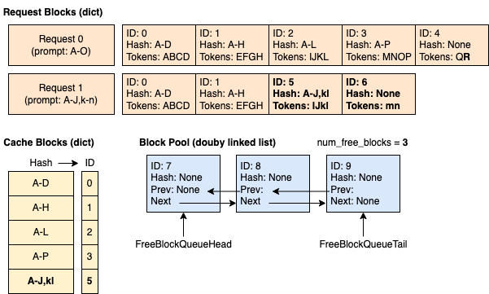
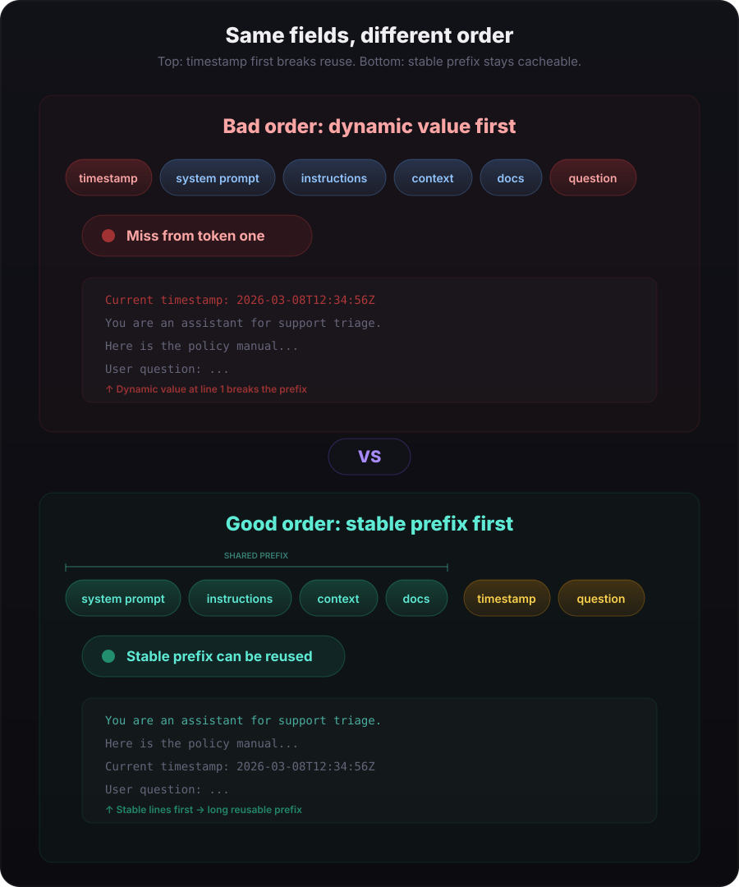
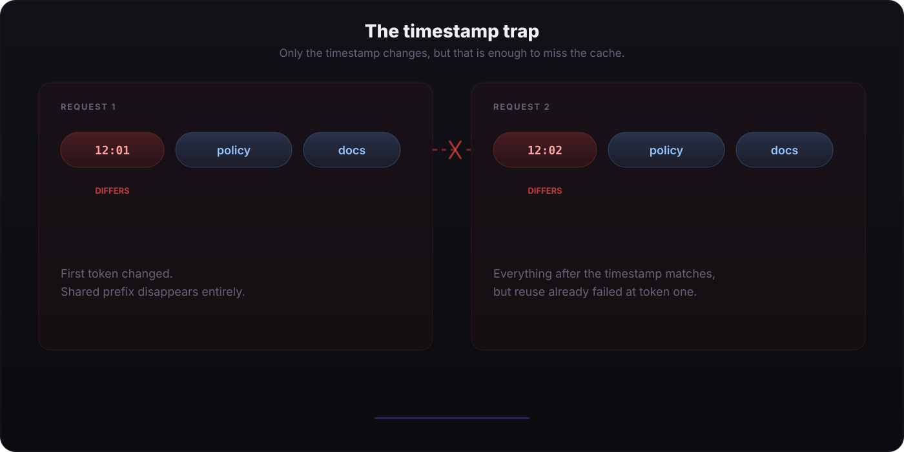

Prefix Caching in LLM Inference: How It Works and How to Get It Wrong
Prefix caching is one of those optimizations that feels almost unfair when your workload is prompt-heavy: keep the stable part of the prompt identical, and the inference engine can skip recomputing a large chunk of prefill work. But it is also easy to quietly sabotage with prompt structure mistakes.
1. What is prefix caching?
During prefill, the model processes the prompt token by token and writes key/value tensors into the KV cache. If another request arrives with the same prompt prefix, an inference engine can reuse the already computed KV state for that shared prefix instead of recomputing it from scratch.
In practice, this matters a lot for workloads where prompts have a large stable prefix: long system prompts, long instructions, retrieved documents, tool schemas, policy text, or large tables. Only the tail changes from request to request.
The important mental model is simple: prefix caching is not semantic caching. The engine does not care that two prompts are “similar”. It cares that the token prefix matches exactly.

2. How different systems implement it
The core idea is the same everywhere — reuse previously computed KV cache entries when the prompt prefix matches — but the mechanism and the knobs differ across systems.



A-J,kl block is allocated separately, which is the behavior vLLM uses for block-level prefix caching. (Source: vLLM documentation)
vLLM
vLLM has automatic prefix caching built into its KV cache manager. It hashes KV cache blocks based on the tokens in the block and the prefix that came before it. When a new request arrives, vLLM looks up already-computed blocks and reuses them if the prefix matches. Caching is block-based rather than prompt-based, and only full blocks are reusable — a partial trailing block is not cached until it fills up.
Put the heavy stable prefix first, then vary only the smallest possible suffix:
from vllm import LLM, SamplingParams
llm = LLM(
model="meta-llama/Meta-Llama-3.1-8B-Instruct",
enable_prefix_caching=True,
)
sampling = SamplingParams(temperature=0, max_tokens=64)
common_prefix = """
You are a careful assistant.
Use the table below to answer the question.
| id | name | age |
|----|------|-----|
| 1 | Ava | 29 |
| 2 | Ben | 41 |
"""
prompt_a = common_prefix + "\nQuestion: What is Ava's age?"
prompt_b = common_prefix + "\nQuestion: What is Ben's age?"
# First request computes and caches the shared prefix.
llm.generate(prompt_a, sampling)
# Second request can reuse the cached prefix.
output_b = llm.generate(prompt_b, sampling)[0]
print(output_b.outputs[0].text)
The second request benefits because most of the prefix is identical. vLLM matches previously computed blocks instead of rebuilding them. As of v0.11, the default block hash algorithm is sha256, and only full blocks are cacheable.
SGLang (RadixAttention)
SGLang exposes prefix caching through RadixAttention. The current docs describe it as the serving runtime's prefix-caching mechanism, and the server keeps it enabled unless you explicitly launch with --disable-radix-cache.
In practice, this is a good fit for workloads where many requests share a long common prefix, such as multi-turn chat with a stable system prompt or repeated calls over the same retrieved context.
# Start the server separately:
# sglang serve \
# --model-path meta-llama/Meta-Llama-3.1-8B-Instruct \
# --port 30000
from sglang import (
RuntimeEndpoint,
assistant,
function,
gen,
system,
user,
)
from sglang.lang.api import set_default_backend
@function
def qa(s, question):
s += system("You are a careful assistant.")
s += user(question)
s += assistant(gen("answer", max_tokens=64))
set_default_backend(RuntimeEndpoint("http://localhost:30000"))
# Both calls share the system prompt prefix automatically
qa.run(question="What is 2 + 2?")
qa.run(question="What is 3 + 5?")
Radix cache is enabled by default in normal SGLang serving. The runtime figures out what can be reused from the tree and only computes the new tail.
OpenAI API
OpenAI prompt caching is automatic for prompts that are 1024 tokens or longer. There is nothing to enable in code for the basic feature, and you can monitor cache hits through usage.prompt_tokens_details.cached_tokens. If you want tighter routing for repeated workloads, the current docs also recommend using prompt_cache_key consistently across matching requests.
from openai import OpenAI
client = OpenAI()
shared_system = (
"You are a legal analyst. "
"Use the contract below to answer questions.\n\n"
+ contract_text
)
# Request 1
r1 = client.chat.completions.create(
model="gpt-4.1",
prompt_cache_key="contract-analysis-v1",
messages=[
{"role": "system", "content": shared_system},
{"role": "user", "content": "What is the termination clause?"},
],
)
# Request 2 — same prefix, different question → cache hit
r2 = client.chat.completions.create(
model="gpt-4.1",
prompt_cache_key="contract-analysis-v1",
messages=[
{"role": "system", "content": shared_system},
{"role": "user", "content": "What are the payment terms?"},
],
)
# Check cache stats
print(r2.usage.prompt_tokens_details.cached_tokens)
The cached_tokens field in the response tells you how many prompt tokens hit the cache. With the default in-memory policy, cached prefixes generally stay active for 5 to 10 minutes of inactivity, up to a maximum of one hour; supported models can also request 24-hour retention with prompt_cache_retention.
Anthropic API
Anthropic offers both automatic and explicit caching. For automatic caching, add a single cache_control field at the top level of your request — the system places the cache breakpoint at the last cacheable block and moves it forward as the conversation grows. For finer control, you can define up to four cache breakpoints in the request.
import anthropic
client = anthropic.Anthropic()
r1 = client.messages.create(
model="claude-sonnet-4-5",
max_tokens=1024,
cache_control={"type": "ephemeral"},
system=(
"You are a legal analyst. "
"Use the contract below...\n\n"
+ contract_text
),
messages=[
{"role": "user", "content": "What is the termination clause?"},
],
)
r2 = client.messages.create(
model="claude-sonnet-4-5",
max_tokens=1024,
cache_control={"type": "ephemeral"},
system=(
"You are a legal analyst. "
"Use the contract below...\n\n"
+ contract_text
),
messages=[
{"role": "user", "content": "What are the payment terms?"},
],
)
# Cache stats in the second response
print(r2.usage.cache_read_input_tokens)
print(r2.usage.cache_creation_input_tokens)
Anthropic prices prompt caching in three parts: 5-minute cache writes cost 1.25× the base input rate, 1-hour cache writes cost 2×, and cache reads cost 0.1×. The default minimum TTL is 5 minutes and refreshes on use. Minimum cacheable length varies by model: 1024, 2048, or 4096 tokens.
What "use it well" looks like (everywhere)
- Keep the system prompt stable across requests.
- Place large shared context before request-specific details.
- Move dynamic fields as far to the end as possible.
- Reuse the same formatting and tokenization, not just the same meaning.
3. Common mistakes I made: lessons learned
My biggest mistake was putting dynamic content at the start of the prompt instead of near the end. The classic example is timestamp information.
I had prompts that started with something like “Current timestamp: 2026-03-08T12:34:56Z” before the stable instruction and context. That means every request started with different tokens, so the prefix was different from token one. The result: cache miss, every time.
Why this is so easy to miss
The insidious thing about this mistake is that nothing breaks. The outputs are still correct, but your prompt-response end-to-end latency starts creeping up, and the symptom is ambiguous. Especially in a self-hosted setup, it is easy to wonder whether the slowdown is coming from GPU VRAM pressure, a prompt that got too long, queueing or batching effects, network delay, or some other serving bottleneck when the real issue is simply that the shared prefix is no longer reusable.
That is what makes it hard to debug: the latency regression looks like a generic inference problem, not obviously a prompt-construction bug. It is also a natural place to put metadata. When you are building a prompt template, the instinct is to set context at the top: "here is who you are, here is what time it is, here is the user's ID." That reads well to a human. But to the inference engine, every unique first token means a completely new prefix, even if the remaining 4,000 tokens are identical.
What it cost me: prefill throughput dropped 1.5× overnight
I learned this the hard way. I was running a workload with a ~6,000-token system prompt containing various instructions, examples, and context, but the tail was still a short user query. Prefix caching should have made this nearly free after the first request. Instead, I noticed the prefill rate (the speed at which the engine processes prompt tokens before generating the first output token) had degraded by at least 1.5× compared to what I expected.
It took me longer than I would like to admit to trace it back. The culprit was a single instruction in my own prompt builder: a timestamp-related line that was dynamically generated at runtime and inserted at the very top of the prompt. Every request got a fresh ISO 8601 timestamp as the first token, which meant every request had a unique prefix from the start. The entire 6,000-token system prompt was being recomputed from scratch on every single call. Removing that line — or more precisely, moving it to after the stable prefix — immediately restored cache hits. Prefill throughput jumped back up, TTFT dropped, and GPU utilization on the prefill side went down noticeably.
The lesson: if your prefill throughput or TTFT looks worse than it should, check the first few tokens of your prompts across requests before blaming the serving engine. The bug is almost always in the prompt builder, not the cache.


policy and docs tokens, but the first chip differs: 12:01 versus 12:02.
The fix is not complicated, but it requires discipline in prompt construction: keep the invariant portion at the front and push per-request values toward the end. If some metadata truly must be included, try to append it after the stable instruction and context instead of prepending it.
Prefix caching rewards prompt stability. It is less about turning a feature on and more about arranging your prompt so the engine has something reusable to work with.
A practical checklist I now follow
- Ask: what part of this prompt is identical across requests?
- Place that invariant prefix first.
- Append timestamps, user IDs, and request metadata later.
- Keep formatting stable across requests so tokenization stays stable too.
- When benchmarking, measure prefill-heavy workloads, not just end-to-end latency.
Conclusion
Prefix caching is one of the cleanest wins in LLM inference, but only if your prompts are structured to make reuse possible. The serving engine already does the hard systems work. The application-side job is to stop breaking the prefix.
If your cache hit rate is mysteriously poor, inspect the first tokens of consecutive prompts before tweaking anything deeper. In my experience, the bug is often not in the inference engine. It is in the prompt builder.
References
- vLLM design notes on automatic prefix caching
- vLLM automatic prefix caching example
- SGLang frontend tutorial and
RuntimeEndpointusage - SGLang server arguments, including radix-cache controls
- SGLang & RadixAttention — fast and expressive LLM inference (LMSYS blog)
- OpenAI prompt caching guide
- OpenAI chat object fields, including
cached_tokens - Anthropic prompt caching documentation